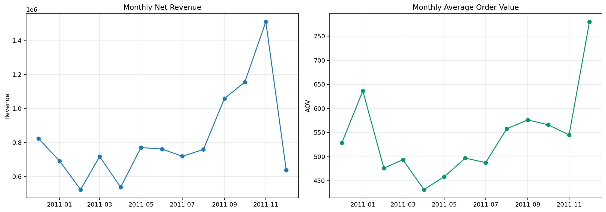
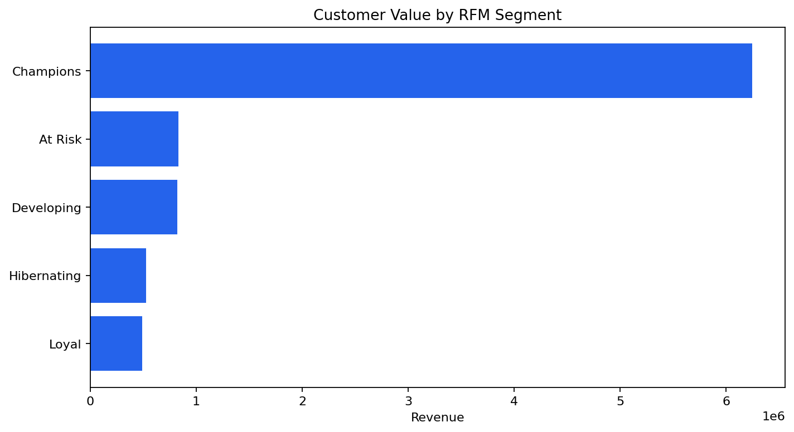
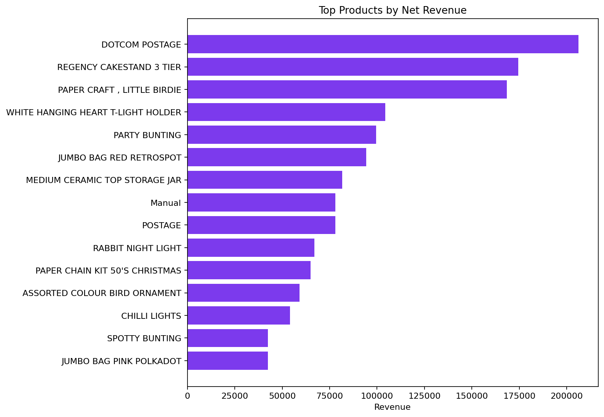

Retail Sales and Customer Value
Author: Mohammed Adeen Shaik
Review date: 11 October 2026
Research question
How do revenue, basket value and customer contribution vary across this historical retail sample?
Data and provenance
UCI Online Retail transactions from December 2010 to December 2011.
Source materials are linked from the repository README. Input fingerprints are recorded in the evidence manifest so a reader can identify the exact committed artifacts used in this review.
Method and analytical rationale
Validated transaction rows are aggregated to monthly KPIs, products and countries. RFM groups summarize how recently and frequently customers purchased and how much they spent.
Findings and interpretation
Fresh pipeline execution on 11 October 2026. The 13 monthly reporting buckets contain aggregate net revenue of 10,666,684.54 GBP. The customer RFM table contains 4,338 identified customers. These totals follow the cleaning and return rules in src/build_model.py. The first and last buckets are incomplete calendar months and should not be used as comparable growth endpoints.
| Measure | Value |
|---|---|
| monthly buckets | 13 |
| net revenue GBP | 10666684.5440 |
| identified RFM customers | 4338 |
Limitations
Partial months distort month-to-month comparisons. RFM labels are descriptive rules, not experimentally validated marketing segments. Returns and unidentified customers require explicit treatment.
Reproduction
Use the setup commands and input contract in the repository README. Open the notebook catalogue for annotated code and saved outputs. Keep raw records and model binaries local; public reports contain aggregate results or source-embedded figures.
Final visual results

Figure from key_visuals.ipynb, original code cell 3.

Figure from key_visuals.ipynb, original code cell 4.

Figure from key_visuals.ipynb, original code cell 5.